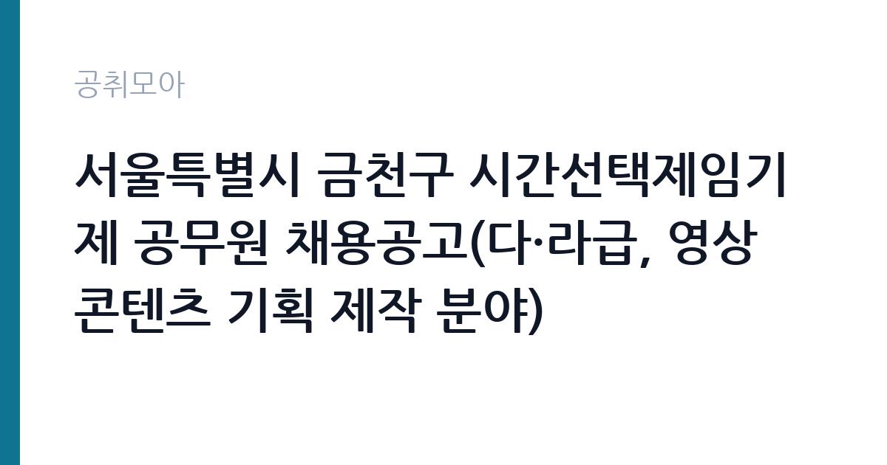

[지자체] 서울특별시 금천구 시간선택제임기제 공무원 채용공고(다·라급, 영상 콘텐츠 기획 제작 분야)
서울특별시 금천구 · 서울 · 마감 2026-11-11 (D-8) · 출처 나라일터

한눈에 보는 모집 조건
| 기관 | 서울특별시 금천구 |
|---|---|
| 공고명 | 서울특별시 금천구 시간선택제임기제 공무원 채용공고(다·라급, 영상 콘텐츠 기획 제작 분야) |
| 고용형태 | 임기제 |
| 근무지 | 서울 |
| 게시일 | 2026-11-03 |
| 마감일 | 2026-11-11 (D-8) |
지원자격, 이렇게 읽으세요
- 시간선택제임기제(다급) 1명 시간선택제임기제(라급) 1명
- 접수 ~2026-11-11 마감
- 세부 조건은 원문 공고문 확인
임기제공무원은 공무원 신분이지만 임용 기간이 정해져 있습니다. 전문성이 필요한 업무에 채용되며 임용 기간과 연봉등급이 공고문에 명시됩니다. 임기 중에는 공무원으로서의 복무 규정과 이해충돌 방지 의무가 적용됩니다. 이번 공고는 서울특별시 금천구가 직접 진행하는 자체 전형입니다. 묶음 모집 공고는 분야별 요건이 서로 다르므로 한 분야의 요건을 다른 분야에 적용하면 안 됩니다. 학위·자격증·경력 요건이 분야마다 다르게 붙고, 직급도 5급 상당부터 9급 상당까지 섞여 있는 경우가 흔합니다. 시간선택제 분야는 주당 근무 시간이 따로 정해져 보수도 비례해 달라집니다. 공고문의 모집분야 표에서 본인 분야의 행만 확인하고, 우대 사항과 제출서류도 그 분야 기준으로 준비하십시오. 응시 자격 판단이 애매하면 접수 전에 채용 담당 부서로 문의하는 편이 안전합니다. 자격 취득 예정자는 채용 공고의 예정자 허용 조항을 먼저 확인해야 합니다. 조항이 없으면 지원 자체가 반려될 수 있습니다. 경력 요건은 총 경력이 아니라 해당 직무 경력만 인정하는 경우가 있으니, 증명서의 직무 기술을 함께 확인하십시오.
이 공고의 포인트
이 건은 서울특별시 금천구가 같은 시기에 낸 2개 모집분야 가운데 모집분야 묶음 직무입니다. 다른 직무 공고와 요건이 다르므로 지원 전에 모집분야 표를 대조해야 합니다. 이 공고의 첫 번째 포인트는 분야가 나뉘어 있다는 점입니다. 같은 공고라도 지원하는 분야에 따라 직급·자격요건·근무기간이 모두 달라지므로, 공고문의 모집분야 표에서 본인 분야 행을 먼저 확정해야 합니다. 두 번째는 고용 형태입니다. 임용 기간이 정해져 있지만 공무원 신분으로 복무 규정이 적용되고, 전문성이 인정되면 재임용이나 유사 직위 지원에 도움이 됩니다. 세 번째는 근무지입니다. 서울 지역 근무로, 분야에 따라 전국 단위 근무가 가능한 경우도 있으니 공고문의 근무예정지를 분야별로 확인하십시오. 묶음 공고는 분야별 경쟁률 차이가 커서, 지원자가 적은 분야를 고르는 것도 전략이 됩니다.
전형은 어떻게 진행되나
서류전형과 면접전형 외에 직무수행능력 평가가 붙는 경우가 있습니다. 평가 방식은 공고문에 구체적으로 적혀 있으므로 어떤 항목에 배점이 높은지 먼저 파악하십시오. 면접에서는 지원 동기보다 실제 업무 경험에 대한 질문이 많고, 답변의 구체성이 평가를 가릅니다. 전형 일정은 서류 마감 이후 빠르게 진행되므로 연락 가능한 번호를 정확히 기재하고 문자와 메일을 수시로 확인해야 합니다. 최종 단계에서는 결격사유 조회와 신체검사가 진행됩니다. 동점자 처리 기준이 공고문에 명시되어 있으니 배점 항목을 미리 확인해 두십시오.
원문에서 확인한 전형 방식
서울특별시 금천구 시간선택제임기제 공무원(다·라급, 영상 콘텐츠 기획 제작 분야)을 다음과 같이 공개모집 합니다. 1. 임용개요 가. 임용분야: 영상 콘텐츠 기획 제작 분야 나. 임용인원: 시간선택제임기제공무원 다급 1명, 라급 1명 다. 직무내용: 금천구 인터넷방송국(유튜브 등) 운영 관리 및 영상 콘텐츠 제작(구성, 촬영, 연출, 편집) 등 라. 임용기간: 최초 임용일부터 1년(근무실적 우수 시, 최초계약일부터 5년의 범위 내에서 연장 가능) 마. 임용방법: 공개채용(1차 서류전형, 2차 면접시험) 2. 공고기간: 2026. 10. 28.(수)∼2026. 11. 7.(토) 3. 원서접수: 2026. 11. 6.(금)∼2026. 11. 11.(수) 4. 세부사항: 붙임 공고문 및 제출서류 양식 참조
이런 분께 추천해요
- 공고 모집분야 중 하나의 요건을 충족하는 분
- 분야별 근무기간·근무시간 차이를 확인한 분
- 배치 분야를 수용할 수 있는 분
지원 전 체크리스트
- 응시자격 요건과 경력 기준을 충족하는가 — 경력은 증명서로 입증해야 합니다
- 임용 기간과 연봉등급, 근무 시간 조건을 확인했는가
- 제출서류 목록을 모두 준비했는가 — 누락 시 서류 단계에서 탈락합니다
- 접수 마감 2026-11-11 이전에 접수 방식을 확인해 제출했는가
모집 일정과 제출 타이밍
접수 마감은 2026-11-11이고 공고는 2026-11-03에 게시되었습니다. 준비 기간 8일 안에 서류 작성, 증빙 발급, 접수를 모두 마쳐야 하므로 주말을 포함해 일정을 미리 나누는 것이 좋습니다. 특히 경력 기술서나 직무수행계획서를 요구하는 공고는 작성에 시간이 걸리므로 첫날 초안을 잡으십시오. 서류 합격자 발표와 면접 사이 간격이 짧은 경우가 많아 면접 예상 질문은 서류 제출 전에 정리해 두는 편이 유리합니다. 마감 직전에는 접속이 몰리므로 여유를 두고 제출하십시오. 서류 발표일과 면접일 사이가 짧은 경우가 많아 면접 준비는 접수와 동시에 시작하는 편이 좋습니다.
직무 이해하기: 지자체
지방자치단체는 지역 행정과 복지, 시설 운영을 담당합니다. 부서별로 사업을 수행하고 결원이나 신규 사업에 따라 임기제와 기간제 인력을 채용합니다. 조례와 자체 인사 규정에 따라 채용 절차가 진행됩니다. 이 공고는 한 장의 공고문에 여러 모집분야를 함께 담은 형태입니다. 분야마다 담당 업무가 완전히 달라서, 같은 공고에 지원해도 배치되는 부서와 하는 일이 전혀 다를 수 있습니다. 공고문에는 보통 분야별 인원·직급·자격요건이 표로 정리되어 있고, 원서접수도 분야를 골라야 진행됩니다. 따라서 먼저 본인이 지원할 분야를 하나로 정하고, 그 분야의 자격요건과 근무기간만 따로 읽는 방식이 안전합니다. 여러 분야를 동시에 지원할 수 있는지는 공고문의 중복지원 제한 조항으로 확인해야 합니다. 이 직무는 담당 구역이 정해져 있어 근무지에 따라 실제 업무 환경이 달라집니다. 업무 강도와 근무 시간대는 부서 배치에 따라 달라지므로 면접에서 확인하는 것이 가장 정확합니다. 이 건의 근무 대상 지역·부서는 원문 기준 '다·라급, 영상 콘텐츠 기획 제작 분야'입니다.
자기소개서 작성 팁
지원서 첫 문단에서 지원 분야를 명확히 밝히는 것이 가장 중요합니다. 묶음 공고는 같은 기관에 여러 지원자가 몰리므로, 어떤 분야에 왜 지원했는지가 드러나지 않으면 준비도가 낮게 평가됩니다. 그 분야의 실무 경험과 자격을 앞세우고, 다른 분야의 경험을 섞어 나열하지 마십시오. 구성은 지원 동기, 직무 경험, 기여 방안 순서가 무난합니다. 지원 동기는 서울특별시 금천구의 사업 중 본인이 관심을 가진 부분을 한 가지로 좁혀 서술하고 추상적인 표현은 줄이십시오. 직무 경험은 담당했던 업무와 규모, 결과를 수치로 제시하면 설득력이 올라갑니다. 기여 방안은 입사 후 첫 3개월과 1년 계획으로 나눠 쓰면 준비도가 드러납니다.
면접 준비 포인트
면접은 지원한 분야의 직무를 기준으로 진행됩니다. 왜 여러 분야 중 그 분야를 골랐는지, 그 분야의 실무를 어느 정도 이해하는지 묻습니다. 다른 분야로 배치될 수 있다는 질문이 나오면 솔직하게 답하고, 본인 경험과 맞는 분야를 근거와 함께 설명하십시오. 모르는 질문에 추측으로 답하면 감점 요인이 되므로, 확인 후 답하겠다고 밝히는 편이 안전합니다. 면접 당일 신분증과 제출서류 원본을 요구하는 경우가 있으니 공고문의 준비물 목록을 확인하십시오.
급여·근무조건 읽는 법
묶음 모집의 보수는 분야별 직급과 근무 형태에 따라 각각 다르게 정해집니다. 일반임기제는 연봉등급제, 시간선택제임기제는 주당 근무 시간에 비례한 보수, 공무직은 기관 임금표를 적용받습니다. 같은 공고 안에서도 총보수 차이가 크므로 본인 분야의 직급과 근무 시간을 기준으로 계산해야 합니다. 구체적 금액은 공고문의 분야별 처우표에서 확인하십시오. 다만 서울특별시 금천구의 보수 수치는 이 글에서 확인된 공시 자료가 없어 추정해 제시하지 않았습니다. 공고문 처우 항목과 첨부된 보수표를 기준으로 확인하십시오. 알리오 2025년 결산 공시 기준 공공기관 전체 일반정규직 1인당 평균보수는 7,376만 9천원, 신입사원 평균초임은 4,031만 6천원입니다(무기계약직 미포함). 2026년 적용 최저임금은 시급 10,320원, 월 환산 2,156,880원(주 40시간·209시간 기준)입니다. 고용노동부 고시 제2025-47호로 확정된 금액입니다. 공고문에 금액이 제시되지 않은 항목은 원문 보수표나 처우 설명에서 확인해야 하며 확인되지 않은 수치는 쓰지 않는 것이 원칙입니다. 비교할 때는 월 급여뿐 아니라 상여·명절휴가비·복지포인트·초과근무수당까지 포함한 연간 총액으로 계산하십시오. 기간제라면 계약 기간 동안의 총액을, 무기계약이라면 호봉 상승과 정년까지의 누적 소득을 기준으로 판단하는 편이 정확합니다.
자주 묻는 질문
- 선발 인원은 몇 명인가요?
공고문 기준 1명입니다. 직종별로 인원이 나뉘는 경우가 있으니 모집분야 항목을 함께 확인하십시오. - 근무지는 어디인가요?
서울 지역의 서울특별시 금천구 소속 근무지입니다. 세부 주소와 출퇴근 조건은 원문 공고문에서 확인할 수 있습니다. - 보수는 얼마인가요?
채용 신분(임기제공무원)과 기관 임금 규정에 따라 정해지며 구체적인 금액은 공고문 처우 항목에 제시됩니다. 금액이 공개되지 않은 경우에는 원문의 보수표를 확인하십시오.
함께 보면 좋은 공고
[지자체] 2026년 제8회 구미시 임기제공무원 임용시험 계획 재공고 — 마감 2026-11-18[지자체] 2026년 제10회 구미시 임기제공무원 임용시험 시행계획 공고 — 마감 2026-11-18[지자체] 2026년 제2회 진안군 공무직근로자(정수시설관리원) 채용계획 재공고 — 마감 2026-11-13출처: 나라일터 공개정보를 바탕으로 공취모아가 정리한 안내글입니다. 모집 조건·일정은 변경될 수 있으니 지원 전 반드시 원문 공고문을 확인하세요. 본 글은 정보 제공용이며 합격을 보장하지 않습니다.